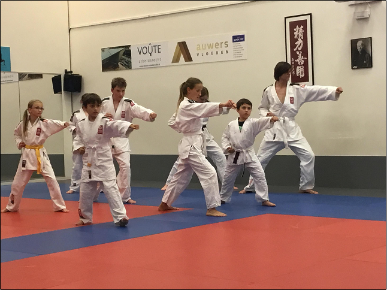

De stijl karate die bij de Benoordenhoutse Judoschool wordt beoefend is het karate-jitsu. Deze stijl gaat verder en bevat meerdere technieken dan de oude stijlen zoals deze in Nederland worden gedoceerd. Het is een praktisch bruikbare karate stijl die zich uitstekend leent voor hen die karate willen beoefenen op zowel recreatief- als wedstrijdniveau en ook voor hen die karate willen beoefenen uit het oogpunt van zelfverdediging. Voorop staat het veilig en plezierig trainen.
Naast het trainen van techniek wordt ook aandacht besteed aan sociale vaardigheden. Karate is zowel aan aanvallende als een verdedigende sport zodat men zich middels wedstrijden met anderen kan meten. Er wordt een opleidingsprogramma aangeboden waarin de oefenstof is verdeeld over diverse graduaties. Iedere hogere, landelijk erkende, graad tot en met de bruine band kan men behalen door het met goed gevolg afleggen van een vaardigheidsexamen binnen de eigen school, door onze rijkserkende examinatoren. Bij de Benoordenhoutse Judoschool zijn de leraren rijks gediplomeerd en beschikken over een ruime ervaring op het gebied van lesgeven. Dan-examens vinden regionaal plaats op voordracht van onze eigen leraren. De lessen staan onder leiding van Theo van Pomeren, 8e dan karate-jitsu.
